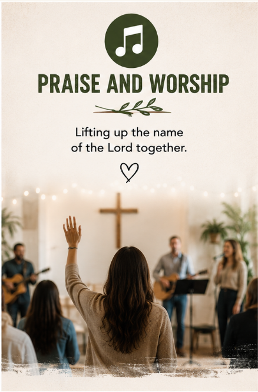
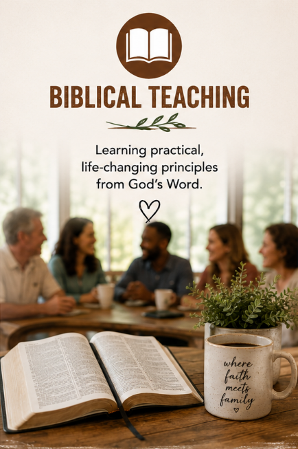
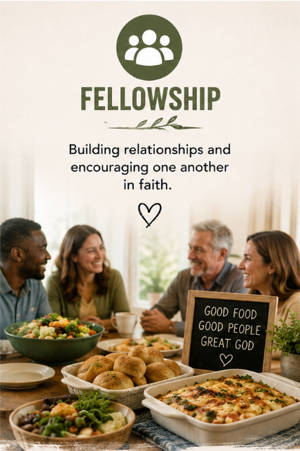

Looking for a place to grow in your faith, connect with others, and experience the presence of God?
Whether you're new to church, returning after time away, or looking for a place to belong, we'd love to welcome you to My Table Church.
We’d love to welcome you every Sunday at 10:30 AM!
Come Be Part of a Meaningful Time Of:



Who We Are
At My Table Church, we believe that some of the most meaningful ministry happens around a table. Following the example of the early church, we gather in a home setting to worship, study God's Word, pray, share meals, and build genuine relationships centered on Jesus Christ.
Our mission is to make disciples, strengthen families, and help believers grow into mature followers of Christ through biblical teaching, authentic fellowship, and practical application of God's Word.
We are committed to creating a welcoming and family-oriented environment where every person is valued, every question is welcomed, and every believer is encouraged to discover and use their God-given gifts.
Our prayer is that as we gather around the table, we will experience the presence of God, grow in faith together, and be sent into our community to love and serve others in the name of Jesus.
Stay for Lunch & Fellowship
After the service, join us for lunch and fellowship! Everyone is encouraged to bring a dish to share as we gather around the table, enjoy a meal together, and continue building relationships in a warm and welcoming atmosphere.
“We’re saved by grace, gathered around the table, and sent to love like Jesus.”
Whether you’re new to church, looking for a church family, or simply seeking a deeper relationship with God, there’s a place for you at My Table Church.